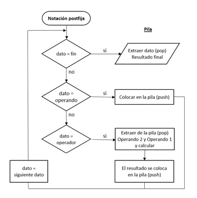
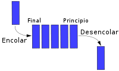
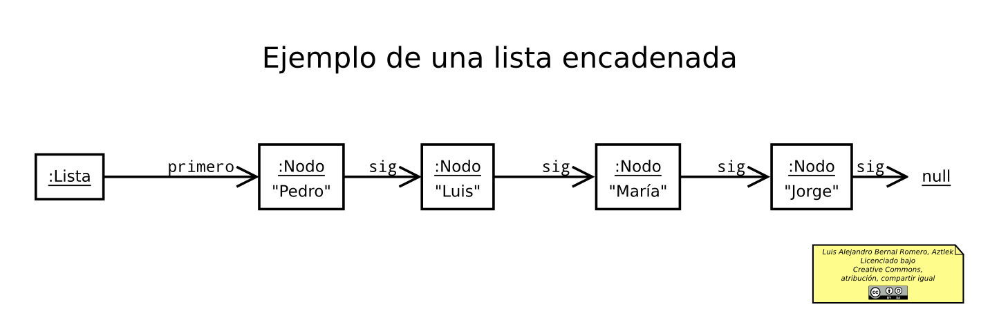
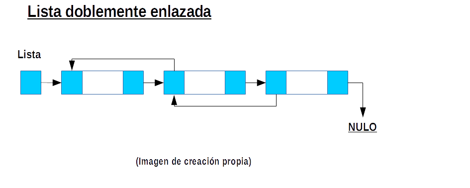

Bienvenido a la Página de Estructuras de Datos
Explora los diferentes tipos de estructuras de datos, desde pilas hasta árboles, y aprende sus características, aplicaciones y beneficios en el desarrollo de software y el manejo de datos.
Pila
Una pila es una estructura de datos que sigue el principio LIFO (último en entrar, primero en salir), donde el último elemento añadido es el primero en ser retirado. Las pilas son fundamentales en aplicaciones que requieren retroceso o deshacer una acción.
- Ejemplo: El uso de pilas en navegadores web permite regresar a páginas anteriores. También se utilizan en funciones de deshacer en aplicaciones de edición.
- Para qué sirve: Son esenciales en algoritmos de retroceso, como la exploración de laberintos, y en la ejecución de expresiones matemáticas.

Diagrama representativo de una estructura de pila.
Cola
Una cola es una estructura que sigue el principio FIFO (primero en entrar, primero en salir), donde el primer elemento agregado es el primero en ser procesado. Las colas son ideales para manejar tareas en orden de llegada.
- Ejemplo: Se utilizan en sistemas de impresión para procesar documentos en el orden en que llegan.
- Para qué sirve: Son útiles en programación de sistemas para la administración de procesos y en algoritmos de búsqueda en grafos.

Ilustración de una cola en programación.
Lista
Una lista es una colección ordenada de elementos que permite almacenar y gestionar datos secuenciales de manera flexible. Los elementos se pueden agregar, eliminar o modificar fácilmente.
- Ejemplo: Listas de tareas en una aplicación de productividad, donde los elementos pueden ser añadidos o eliminados.
- Para qué sirve: Permite organizar datos secuenciales y es la base para estructuras más complejas como pilas y colas.

Ejemplo visual de una lista en programación.
Lista Doble
Una lista doblemente enlazada es una lista donde cada elemento está conectado con el siguiente y el anterior, lo que permite desplazarse en ambas direcciones. Esto facilita la inserción y eliminación de elementos en cualquier posición.
- Ejemplo: Editor de texto donde se necesita mover el cursor hacia adelante y atrás.
- Para qué sirve: Son útiles en aplicaciones donde se necesita navegar en ambas direcciones, como en navegadores web para el historial de navegación.

Diagrama de una lista doblemente enlazada.
Lista Circular
Una lista circular enlaza el último elemento con el primero, formando un bucle continuo. Es útil cuando se desea realizar operaciones de manera cíclica.
- Ejemplo: Listas de reproducción en una aplicación de música donde las canciones se repiten en ciclo.
- Para qué sirve: Son ideales para algoritmos que requieren una estructura circular, como los sistemas de reparto en turnos (round-robin) o en la implementación de juegos.
Representación de una lista circular.
Árbol
Un árbol es una estructura jerárquica compuesta de nodos, donde cada nodo puede tener "hijos" y un solo "padre". El nodo superior se llama raíz, y es una estructura común para organizar información jerárquica.
- Ejemplo: Estructura de carpetas en sistemas operativos, donde las carpetas tienen subcarpetas.
- Para qué sirve: Son útiles en la representación de datos jerárquicos y se usan en bases de datos, algoritmos de búsqueda, sistemas de archivos, y más.

Diagrama de un árbol en programación.